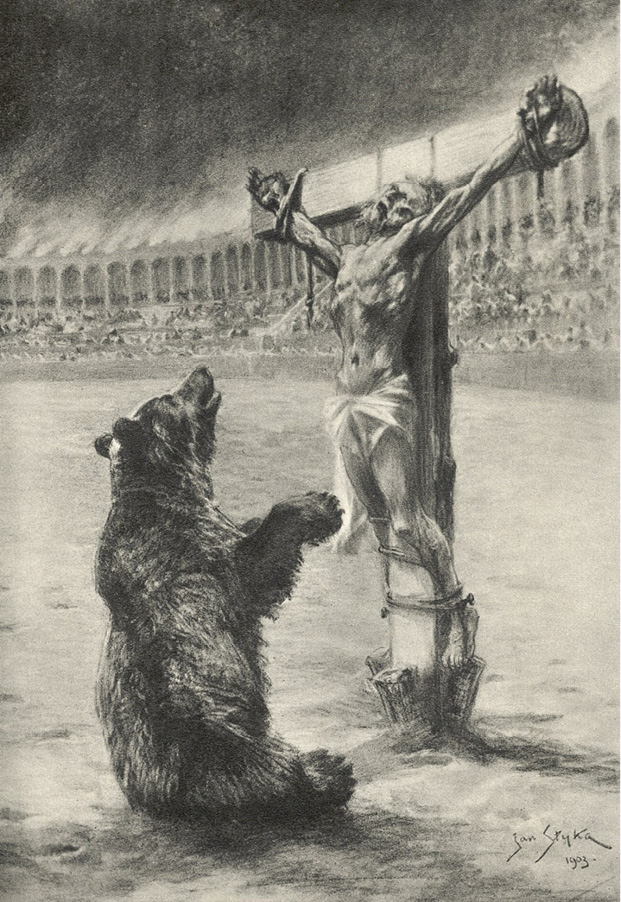

LXIII
Drama Aureolus bylo dáváno obyčejně v divadlech nebo amfitheatrech tak zařízených, že se mohly otvírati a jaksi tvořiti dvě různá jeviště. Ale po výjevu v zahradách Caesarových bylo od obvyklého způsobu upuštěno, protože šlo o to, aby pokud možno největší počet lidí mohl se dívati na smrt otroka, jenž byl přibit na kříž a kterého v dramatě požíral medvěd. Na divadlech hrával úlohu medvědovu herec, zašitý do kůže; tentokrát však představení mělo býti „opravdové“. Byl to nový nápad Tigellinův. Caesar zprvu prohlásil, že se nedostaví, ale na domluvu milcovu změnil úmysl. Tigellinus mu vysvětlil, že po tom, co se přihodilo v zahradách, je tím více povinen ukázati se lidu, a současně se zaručil, že ukřižovaný otrok již ho nepotupí, jako to učinil Crispus. Lid byl již poněkud přesycen a unaven proléváním krve; proto bylo mu ohlášeno nové rozdílení loterních lístků a dárků, mimo to ohlášena i večerní hostina, jelikož se představení mělo konati večer v bohatě osvětleném amfitheatru.
A tak za soumraku naplnila se celá budova do posledního místečka; Augustiani s Tigellinem v čele dostavili se všichni, ne tak pro podívanou samu, jako spíše proto, aby po poslední události projevili Caesarovi svou věrnost a pohovořili si o Chilonovi, o němž mluvil celý Řím.
Vypravováno si tudíž pošeptmu, že Caesar, vrátiv se ze zahrad, byl zachvácen zuřivostí a že nemohl usnouti, že jej přepadávaly úzkosti a podivné přízraky, výsledek jejich pak že byl ten, že ohlásil nazítří svůj náhlý odjezd do Achaie. Jiní však to popírali, tvrdíce, že se nyní ukáže vůči křesťanům tím neúprosnějším. Nechyběli nicméně ani zbabělci, kteří předpovídali, že obvinění, jaké Chilon vmetl Caesarovi ve tvář přede všemi davy, může míti nejhorší následky. Byli konečně i tací, kteří z lidskosti prosili Tigellina, aby upustil od dalšího pronásledování.
„Podívejte se, kam spějete!“ mluvil Barcus Soranus. „Chtěli jste ukojiti pomstu lidu a vštípiti mu přesvědčení, že trest padá na viníky, a zatím výsledek je přímo opačný.“
„Zajisté!“ dodal Antistius Verus. „Všichni si nyní šeptají, že jsou nevinni. Má-li to býti zchytralost, pak měl Chilon pravdu, tvrdě, že by vaše mozky nenaplnily ani jediné žaludové číšky.“
Tigellinus obrátil se k nim a řekl:
„Lidé si také šeptají, že Servilie, tvá dcera, Barcu Sorane, i tvá žena, Antistie, skrývaly své křesťanské otroky před spravedlností Caesarovou.“
„To není pravda!“ zvolal s nepokojem Barcus.
„Moji ženu chtějí zničiti vaše rozvedené manželky, které jí závidí ctnost!“ řekl s nemenším nepokojem Antistius Verus.
Jiní však rozprávěli o Chilonovi.
„Co se mu stalo?“ mluvil Eprius Marcellus. „Sám je přece vydával do rukou Tigellinových! Z chuďasa se stal boháč, mohl dožíti své dny v klidu, míti krásný pohřeb i pomník, avšak – ne!! Najednou chtěl raději přijít o všecko a ztratit se. Opravdu, snad se zbláznil!“
„Nezbláznil, ale stal se křesťanem!“ řekl Tigellinus.
„Což jím nemůže býti?“ ozval se Vitelius.
„Neříkal jsem to!“ poznamenal Vestinus. „Vražděte si křesťany, ale věřte mi: nebojujte s jejich božstvím! Zde není žertů…! Podívejte se, co se děje! Nezapálil jsem Říma, ale kdyby mi Caesař dovolil, hned bych dal hekatombu jejich božství. A všichni by měli učiniti totéž, neboť opakuji: Není s tím žertů! Pamatujte si, že jsem vám to říkal!“
„Ale já jsem říkal něco jiného,“ řekl Petronius. „Tigellinus se smál, když jsem tvrdil, že křesťané se brání. Nyní však řeknu více: Oni vítězí!“
„Jakže? Jakže?“ ptalo se několik hlasů.
„U Polluxe…! Jestliže před nimi neobstál takový Chilon, kdo před nimi obstojí? Myslíte-li si, že po každé podívané nepřibývá křesťanů, pak při své známosti Říma se staňte kotláři nebo začněte holiti brady, poněvadž budete pak lépe věděti, jak lid smýšlí a co se děje v městě.“
„Mluví ryzí pravdu, u svatého pepla Dianina!“ Zvolal Vestinus.
Ale Bareus obrátil se k Petroniovi:
„Kam tím míříš?“
„Končím tím, čím jste začali: Dosti již krve!“
Ale Tigellinus pohlédl na něho jízlivě a řekl:
„Aj, trochu ještě!“
„Nestačí-li ti na to hlava, máš druhou v držadle u hole!“ odvětil Petronius.
Další hovor byl přerušen příchodem Caesara, který zaujal místo ve společnosti Pythargorově. Hned potom začalo představení „Aureola“, které nebylo valně sledováno, poněvadž mysli byly zaujaty Chilonem. Lid uvyklý mukám i krvi nudil se rovněž, syčel, vydával výkřiky, jež dvoru nelichotily, a volal, aby výjev s medvědem byl urychlen, poněvadž pouze toho byl zvědav. Kdyby nebylo naděje, že spatří starce a dárky, podívaná sama by nestačila, aby udržela davy.
Ale konečně nadešla očekávaná chvíle. Zřízenci cirku přinesli nejdříve dřevěný kříž, dosti nízký, aby medvěd, postaví-li se na zadní nohy, mohl dosáhnouti prsou mučedníkových; potom dva lidé přivedli, či spíše přivlekli Chilona, protože sám, maje rozdrceny kosti na nohou, jíti nemohl. Byl položen a přibit na kříž tak rychle, že zvědaví Augustiani nemohli si ho ani řádně prohlédnouti; teprve, když byl vsazen kříž do jámy, zvláště k tomu připravené, všecky oči obrátily se k němu. Ale málokdo mohl poznati v tom nahém starci dřívějšího Chilona. Po mučení, jež s ním provésti rozkázal Tigellinus, nezůstala mu ve tváři ani kapka krve a jen na bílém plnovousu bylo viděti rudou stopu, kterou zanechala krev po vytržení jazyka. Skrze průsvitnou kůži bylo snadno možno pozorovati jeho kosti. Také připadal daleko starším, téměř vetchým. Kdysi vrhaly jeho oči pohledy, věčně plné nepokoje a zloby, jeho bdělý obličej jevíval dříve věčnou úzkost a nejistotu, kdežto nyní měl tvář bolestnou, ale tak sladkou a klidnou, jakou mívají lidé spící nebo mrtví. Snad mu dodávala důvěry vzpomínka na lotra, jemuž Kristus na kříži odpustil, snad i mluvil v duchu k milosrdnému Bohu: „Pane, štípal jsem jako jedovatý hmyz, ale byl jsem, hle, po celý život chuďasem, zmíral hlady, lidé po mně šlapali, tloukli mne, pásli se na mých mukách. Byl jsem chud, Pane, a velice nešťasten, a hle, ještě teď byla mi připravena trýzeň a jsem přibit na kříž! Nuže, Ty Milosrdný, nezapudíš mne v hodině smrti!“ A mír dle všeho vstoupil do jeho zkroušeného srdce. Nikdo se nesmál, neboť bylo v tomto ukřižovaném cosi tak tichého, zdál se býti tak starým, bezbranným, slabým, tak volajícím svojí pokorou o soucit, že si bezděky dával každý otázku: Jak je možno trýzniti a na kříž přibíjeti lidi, kteří beztak umírají?
Dav mlčel. Mezi Augustiany Vestinus, nakláněje se vpravo i vlevo, zašeptal polekaným hlasem: „Hleďte, kterak umírají!“ – jiní čekali na medvěda, přejíce si v duchu, aby se podívaná skončila co nejdříve.
Konečně se medvěd do arény přivalil, a kolébaje svěšenou hlavou na obě strany, rozhlížel se úkosem dokola, jako by o něčem přemýšlel nebo cosi hledal. Zahlédnuv konečně kříž a na něm nahé tělo, přiblížil se k němu, dokonce i postavil se na zadní nohy, ale za chvíli se zase spustil na přední tlapy, a posadiv se u kříže, začal bručeti, jako by se i v jeho zvířecím srdci ozvala lítost nad tím zbytkem člověka.
Z úst zřízenců cirku ozvaly se štvavé výkřiky, lid však mlčel. Chilon zvedl zatím pomalým pohybem hlavu a nějakou dobu těkal očima po hledišti. Nakonec jeho zrak se zastavil kdesi na nejvyšších řadách amfitheatru, prsa se mu začala živěji dmouti a tehdy se stalo cosi, co uvedlo v údiv a úžas diváky. Hle, tvář se mu zjasnila úsměvem, jeho čelo jako by se opředlo paprsky, oči se vznesly před smrtí a za chvíli dvě velké slzy, vyronivší se pod víčky, skanuly mu zvolna po tváři.
A zesnul.
Vtom jakýsi mocný, mužský hlas nahoře pod velariem zvolal:
„Pokoj mučedníkům!!“
V amfitheatru panovalo hluboké ticho.

… a posadiv se u kříže, začal bručeti…